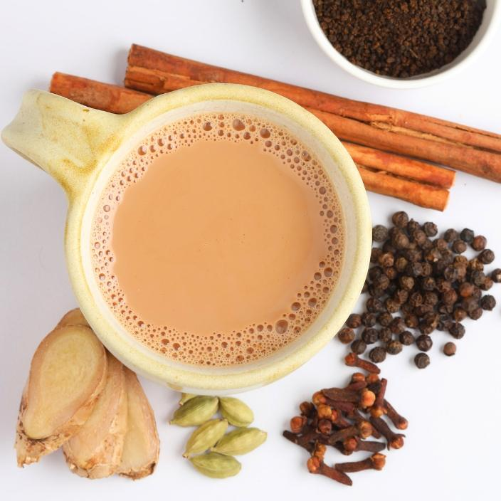

Masala Tea

Description
Masala Tea is an Indian beverage made by brewing black tea with
fragrant spices, sugar and milk. In Hindi the word “Masala” means “spices”
and “Chai” means “Tea”. So Masala Chai also known as CHAI TEA by the
non-natives is Indian milk tea brewed with aromatic spices.
Ingredients
- Water
- Milk
- Black tea leaves
- Sugar
- Cinnamon sticks
- Cloves
- Ginger
Steps:
- Boil water.
- Add ginger, cinnamon, cardamom, cloves, and optional spices.
- Simmer for 3-5 minutes.
- Add tea leaves and simmer for 2-3 minutes.
- Pour in milk and bring to a boil.
- Simmer for 2-3 minutes.
- Add sugar and stir.
- Strain into cups.
- Serve hot.